Building an Arrival Rate Estimator
Contents
- Overview of Demo
- Task: Estimate Entity Rate at a Point
- Part 1: Initial Design of Rate Estimator Subsystem
- Results of Initial Design
- Problem with Results of Initial Design
- Part 2: Investigation via Periodic Estimation
- Results of Periodic Estimation
- Part 3: Improved Event-Based Estimation
- Computations During Idle Intervals
- Refined Simulation Results
- Conclusions
Overview of Demo
This demo illustrates the process of designing and troubleshooting a performance measurement in a discrete-event simulation. The measurement is an estimate of the entity arrival rate at a point in the entity path. However, other model-building situations can apply the demo's general ideas related to building a design incrementally and comparing simulation behavior with expectations.
Task: Estimate Entity Rate at a Point
The design task is to estimate the rate or throughput of parts, messages, jobs, or other items that entities represent in your application. The model below can serve as a test bed for a rate estimator. Entities arrive at the Arrival Rate Estimator subsystem at a piecewise constant rate of 1/4 or 0 over different time intervals during the simulation.
open_system sedemo_rateestimator_initialdesign;
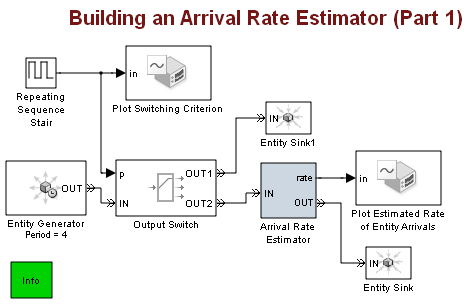 Part 1: Initial Design of Rate Estimator Subsystem
Inside the Arrival Rate Estimator subsystem is a function-call subsystem that performs a rate estimation computation and blocks that dictate when to perform the computation. The computation involves the time interval between successive entities, so performing the computation upon each entity arrival makes sense.
open_system('sedemo_rateestimator_initialdesign/Arrival Rate Estimator','force');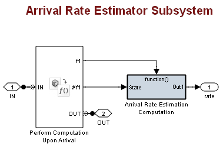
Results of Initial Design
The plot of the switching criterion shows that entities arrive at the rate estimator during the time intervals (0,200), (400,600), and (800,1000). During these intervals, the entity arrival rate is 1/4, or, 0.25.
The rate plot shows that during these time intervals, the rate estimator produces values near 0.25 after an initial transient that corresponds to start of the simulation or sudden changes in the rate.
sim sedemo_rateestimator_initialdesign; close_system('sedemo_rateestimator_initialdesign/Arrival Rate Estimator');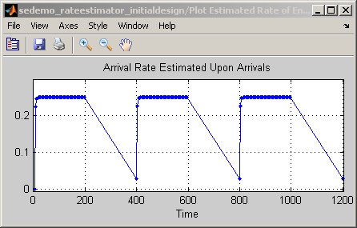 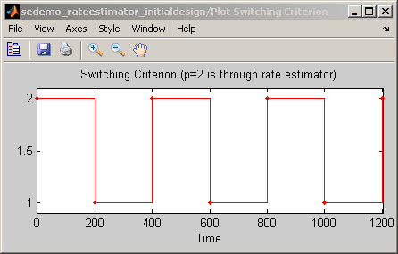
Problem with Results of Initial Design
The rate estimation is less successful during the time intervals (200,400), (600,800), and (1000,1200), when no entities arrive at the rate estimator. Across each of these time intervals, the plot shows a line segment from a value near 0.25 to a value near 0. A faster decay to 0 would more accurately represent the actual entity rate. Also, you might expect more symmetry between the rate=1/4 time intervals and the rate=0 time intervals.
The reason for the problem is that the Arrival Rate Estimator subsystem performs a computation upon each entity arrival, but does not update the computation to reflect the absence of entities.
Part 2: Investigation via Periodic Estimation
One way to investigate the problem is to try the same computation with simpler timing characteristics. In particular, perform the computation periodically to ensure that the computation occurs even when no entities arrive. Connect the function-call subsystem to a time-based Function-Call Generator block instead of the event-based block labeled Perform Computation Upon Arrival.
sedemo_rateestimator_timebasedfcn;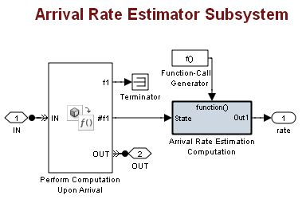
Results of Periodic Estimation
The rate plot is now more symmetric and shows a faster decay to 0 during the idle intervals, that is, time intervals when no entities arrive. While periodic computations are not desirable in the final design, this interim design increases confidence in the underlying rate estimation computation and suggests that performing the computation during idle intervals might address the problem with the results of Part 1.
sim sedemo_rateestimator_initialdesign;
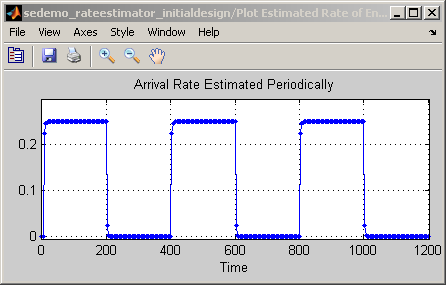 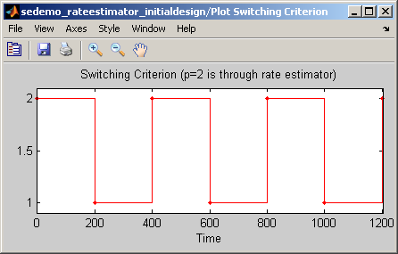 Part 3: Improved Event-Based Estimation
The next design modifies the original model by incorporating periodic estimates during idle intervals. In particular, the model performs the rate estimation computation when either:
- An entity has arrived.
- A predetermined amount of time has elapsed since the last entity arrival.
In the images below, the top level is unchanged but the Arrival Rate Estimator subsystem includes a subsystem labeled Control Computation During Idle Intervals.
open_system sedemo_rateestimator_withidlecomp; open_system('sedemo_rateestimator_withidlecomp/Arrival Rate Estimator','force');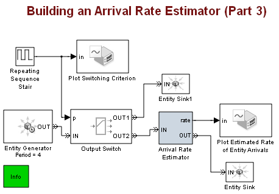 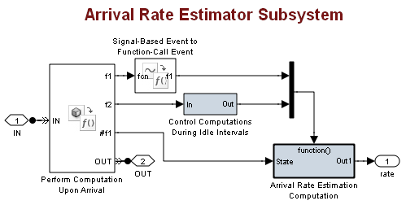
Computations During Idle Intervals
The subsystem that controls computations during idle intervals uses timeouts to indicate that the predetermined amount of time has elapsed since the last entity arrival in the top-level system.
- When a timeout occurs, a function call causes the Arrival Rate Estimator subsystem to perform the rate estimation computation.
- When an entity arrives in the top-level system, the timeout clock resets.
The timeouts apply to a single entity that travels in loops around this subsystem and that measures idle time.
open_system(['sedemo_rateestimator_withidlecomp/Arrival Rate Estimator/' ... 'Control Computations During Idle Intervals']);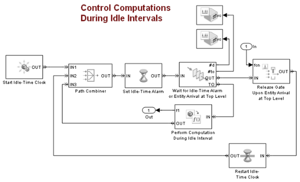
Refined Simulation Results
The simulation results address the problems from Part 1 while retaining event-based timing of the rate estimation computation during nonidle intervals.
sim sedemo_rateestimator_withidlecomp;
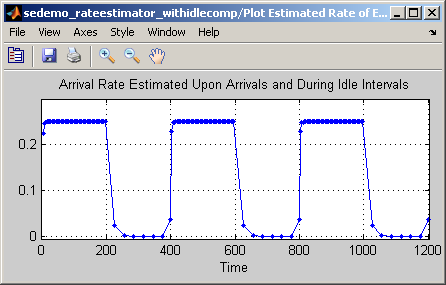 Conclusions
- The initial design incorporated some aspects of the desired solution: in this case, a computational subsystem and an event-based calling strategy.
- Running the simulation on a relatively simple test case facilitated comparison of simulation results with expectations. The comparison showed that the initial design did not account for long idle intervals.
- Simplifying one aspect of the design, in this case the timing for calling the computational subsystem, helped build understanding and support a refinement that added complexity to the next design.
bdclose sedemo_rateestimator_initialdesign; bdclose sedemo_rateestimator_withidlecomp;